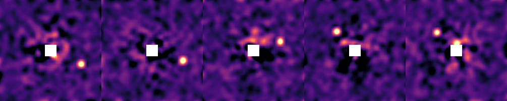
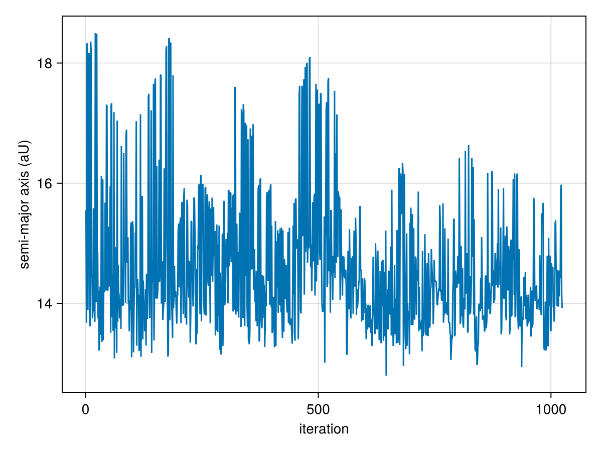
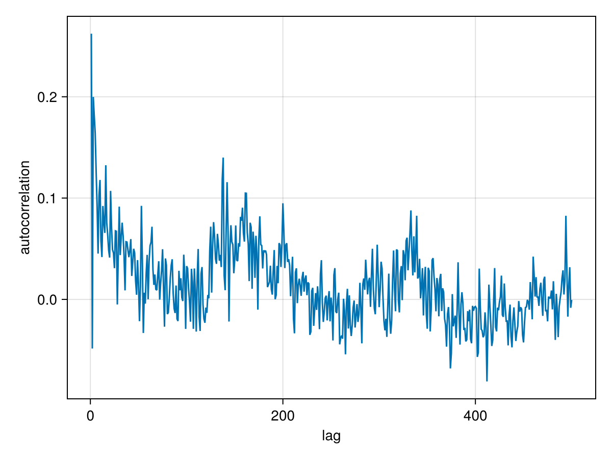
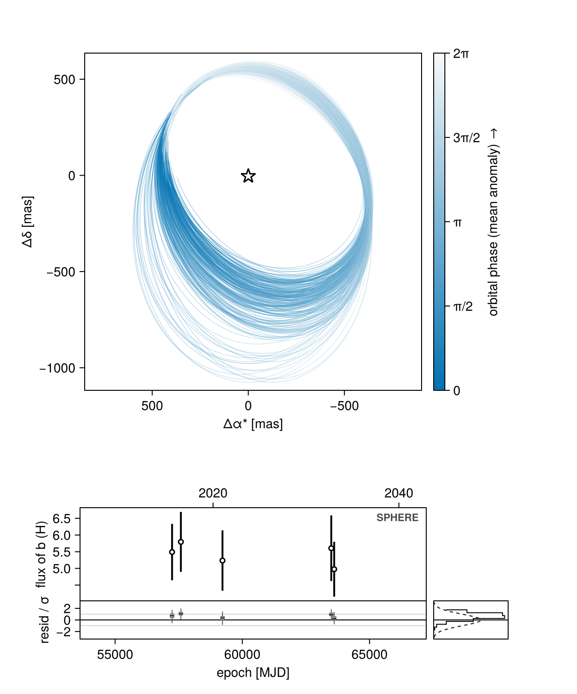
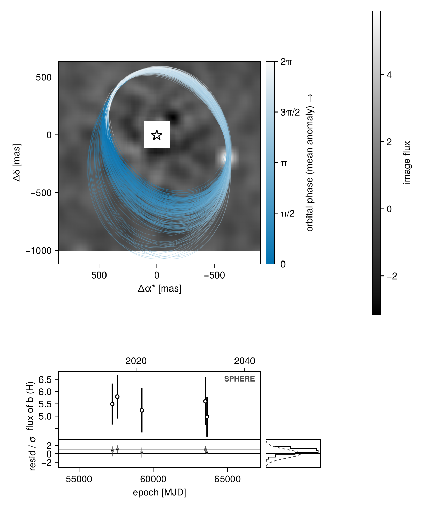
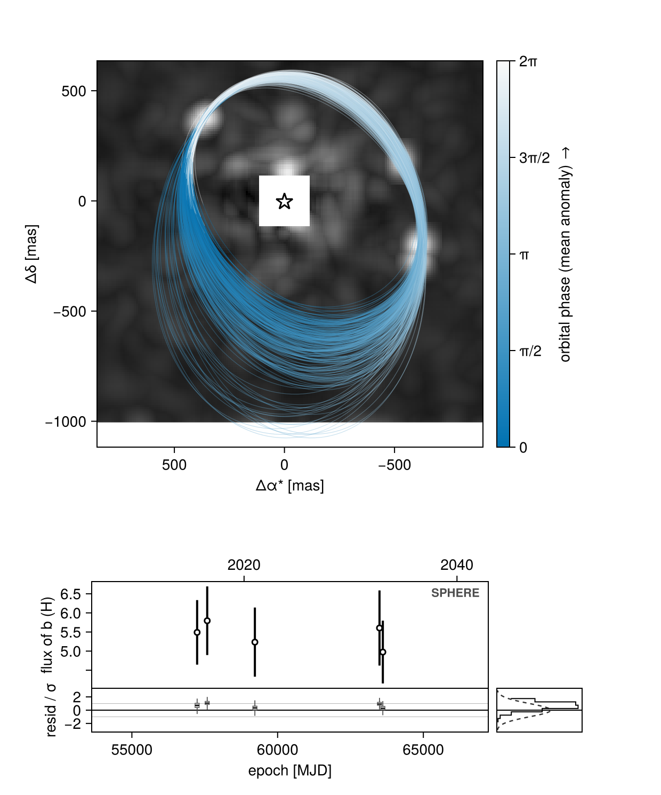
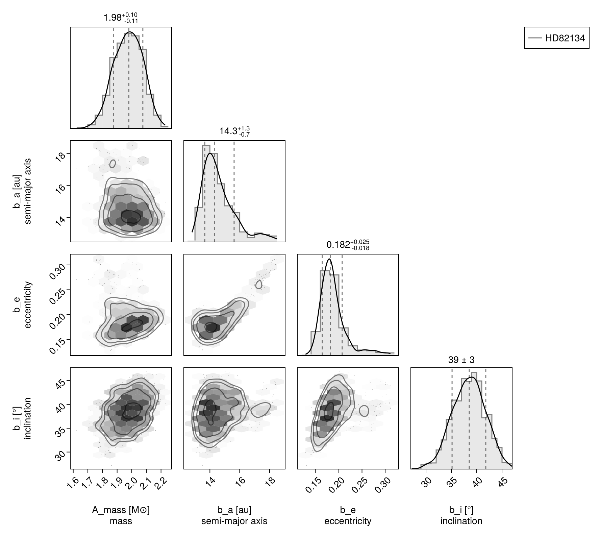
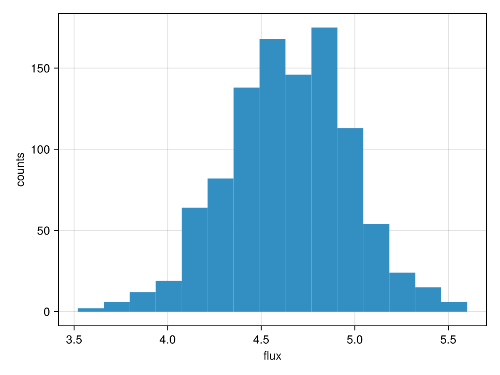

Fitting Images
One of the key features of Octofitter.jl is the ability to search for planets directly from images of the system. Sampling from images is much more computationally demanding than sampling from astrometry, but it allows for a few very powerful results:
- You can search for a planet that is not well detected in a single image
By this, we mean you can feed in images of a system with no clear detections, and see if a planet is hiding in the noise based off of its Kepelerian motion.
- Not detecting a planet in a given image can be almost as useful as a detection for constraining its orbit.
If you have a clear detection in one epoch, but no detection in another, Octofitter can use the image from the second epoch to rule out large swathes of possible orbits.
Sampling from images can be freely combined with any known astrometry points, as well as astrometric acceleration. See advanced models for more details.
Image modelling is supported in Octofitter via the extension package OctofitterImages. To install it, run pkg> add http://github.com/sefffal/Octofitter.jl:OctofitterImages
Preparing images
The first step will be to load your images. For this, we will use our AstroImages.jl package.
Start by loading your images:
using Octofitter
using OctofitterImages
using Distributions
using AstroImages
using CairoMakie
using Pigeons
# Load individual iamges
# image1 = load("image1.fits")
# image2 = load("image2.fits")
# Or slices from a cube:
# cube = load("cube1.fits")
# image1 = cube[:,:,1]
# Download sample images from GitHub
download(
"https://github.com/sefffal/Octofitter.jl/raw/main/docs/image-examples-1.fits",
"image-examples-1.fits"
)
# Or multi-extension FITS (this example)
images = AstroImages.load("image-examples-1.fits",:)5-element Vector{AstroImages.AstroImageMat{Float64, Tuple{DimensionalData.Dimensions.X{DimensionalData.Dimensions.Lookups.Sampled{Int64, Base.OneTo{Int64}, DimensionalData.Dimensions.Lookups.ForwardOrdered, DimensionalData.Dimensions.Lookups.Regular{Int64}, DimensionalData.Dimensions.Lookups.Points, DimensionalData.Dimensions.Lookups.NoMetadata}}, DimensionalData.Dimensions.Y{DimensionalData.Dimensions.Lookups.Sampled{Int64, Base.OneTo{Int64}, DimensionalData.Dimensions.Lookups.ForwardOrdered, DimensionalData.Dimensions.Lookups.Regular{Int64}, DimensionalData.Dimensions.Lookups.Points, DimensionalData.Dimensions.Lookups.NoMetadata}}}, Tuple{}, Matrix{Float64}, Tuple{DimensionalData.Dimensions.X{DimensionalData.Dimensions.Lookups.Sampled{Int64, Base.OneTo{Int64}, DimensionalData.Dimensions.Lookups.ForwardOrdered, DimensionalData.Dimensions.Lookups.Regular{Int64}, DimensionalData.Dimensions.Lookups.Points, DimensionalData.Dimensions.Lookups.NoMetadata}}, DimensionalData.Dimensions.Y{DimensionalData.Dimensions.Lookups.Sampled{Int64, Base.OneTo{Int64}, DimensionalData.Dimensions.Lookups.ForwardOrdered, DimensionalData.Dimensions.Lookups.Regular{Int64}, DimensionalData.Dimensions.Lookups.Points, DimensionalData.Dimensions.Lookups.NoMetadata}}}}}:
[-0.340230578841865 -0.31239887526186355 … -0.2903753168231458 -0.34686827004814064; -0.29826568928566355 -0.27872689920999305 … -0.246452640103626 -0.2873140658333837; … ; 0.2673577868138141 0.2674003307584391 … -0.35696041486602914 -0.4320582965232348; 0.34147717271077094 0.3420908537177248 … -0.3358061981896538 -0.4139117427343716]
[-1.0477769487233675 -0.903332487139985 … 1.4299602191511185 1.5070937596027922; -0.9888724404777535 -0.8589483767137767 … 1.1201264194935676 1.1803510698319304; … ; -0.43042419506343155 -0.46545013356425746 … -0.7066171674807686 -0.8619933383603304; -0.5837006039738425 -0.6021768042432977 … -0.8745923304009366 -1.0622653729194567]
[-1.3673176596472436 -1.1985348376204175 … 1.1486692344915643 1.2929199629807906; -1.1143572848991925 -0.9810874969329584 … 0.9739105840286464 1.079311141942771; … ; 1.0292715351056276 0.8022139684685823 … 0.674123592556085 0.8519386886571362; 1.2170463982677187 0.9582307659215409 … 0.7602550494569255 0.959778160219427]
[-0.16664741987337547 -0.13437529569419648 … -1.2963013699793633 -1.413565369547865; -0.2149990713151032 -0.1847368741065949 … -1.0549153738841368 -1.1490484959706464; … ; -0.5872462145987273 -0.5703179209210852 … 0.19469039731388912 0.31932314143450863; -0.7173113967617594 -0.6848676990867931 … 0.19122281859925802 0.3434506497145075]
[0.47470453920043826 0.4747486393369815 … -0.16662161045865695 -0.16297895606178783; 0.4078627130832368 0.4041383409077344 … -0.18122203442704718 -0.17883512905931084; … ; 0.07003384675445126 0.19916060264117244 … -0.44137489323835993 -0.5253547777211444; 0.023766763613137065 0.1809119688664255 … -0.5699244785815155 -0.6776496918698217]You can preview the image using imview from AstroImages:
# imshow2(image1, cmap=:magma) # for a single image
hcat(imview.(images, clims=(-1.0, 4.0))...)
Your images should either be convolved with a gaussian of diameter one λ/D, or be matched filtered. This is so that the values of the pixels in the image represent the photometry at that location.
If you want to perform the convolution in Julia, see ImageFiltering.jl.
Build the model
First, we create a table of our image observations:
image_dat = Table(;
epoch = 56000 .+ [1238.6, 1584.7, 3220.0, 7495.9, 7610.4],
image = [
AstroImages.recenter(images[1]),
AstroImages.recenter(images[2]),
AstroImages.recenter(images[3]),
AstroImages.recenter(images[4]),
AstroImages.recenter(images[5])
],
platescale = [10.0, 10.0, 10.0, 10.0, 10.0]
)Provide one entry for each image you want to sample from. platescale should be the pixel scale of your images, in milliarseconds / pixel. epoch should be the Modified Julian Day (MJD) that your image was taken; you can use the mjd("2021-09-09") function to calculate this for you. (The sample images above ship with arbitrary epoch labels spanning about 17 years, so we offset them onto plausible MJDs. Only the spacing of the epochs affects the fit.)
Areas of the image where there is no data should be filled with NaN and will not contribute to the likelihood of your model.
Each image must be re-centered so that index [0,0] falls on the position of ref — the body the images are measured against, usually the host star. That is what AstroImages.recenter is doing above.
Now the bodies. The host star A is a body like any other, and the planet b orbits it (about=A):
A = Body(
name="A",
variables=@variables begin
mass ~ truncated(Normal(2.0, 0.1), lower=0.1) # M⊙
end
)
b = Body(
name="b",
about=A,
variables=@variables begin
# Brightness of this planet in the H band, in image units.
flux_H ~ Normal(3.8, 0.5)
a ~ truncated(Normal(13, 4), lower=0.1, upper=100)
e ~ Uniform(0.0, 0.5)
i ~ Sine()
ω ~ UniformCircular()
Ω ~ UniformCircular()
θ ~ UniformCircular() # position angle at `epoch`
epoch = 57238.6 # reference epoch for θ; near the first image
end
)See Fit Relative Astrometry for a description of the different orbital parameters, and conventions used.
Finally the observation itself, and the system:
image_obs = ImageObs(
image_dat,
targets = (b,), # every source these images are modelled to contain
ref = A, # the point index [0,0] of each image sits on
band = :H, # read each target's `flux_H` variable
name = "SPHERE",
variables=@variables begin
# The following are optional parameters for marginalizing over instrument systematics:
# Platescale uncertainty multiplier [could use: platescale ~ truncated(Normal(1, 0.01), lower=0)]
platescale = 1.0
# North angle offset in radians [could use: northangle ~ Normal(0, deg2rad(1))]
northangle = 0.0
end
)
sys = System(
name="HD82134",
bodies=[A, b],
observations=[image_obs],
variables=@variables begin
plx ~ truncated(Normal(45., 0.02), lower=0.1)
end
)[ Info: Measuring contrast from image
[ Info: [HD82134] observing_geometry = true (auto): no observation can report comparable predictions (ImageObs); nothing to measure, so keeping the correction on — no draws needed (seed 0xc70f177e5000001)
[ Info: [HD82134] barycentric_lighttime = true (auto): no observation can report comparable predictions (ImageObs); nothing to measure, so keeping the correction on — no draws needed (seed 0xc70f177e5000001)Where the planet's brightness lives
The planet's brightness is flux_H, and it is a variable of the body, not of the observation.
The reason is that one image contains every companion in the field at once. One image set is one likelihood: targets lists every source modelled in it, and each source reads its own brightness from its own body. Adding one likelihood per companion instead would count the same image's background once per companion.
c = Body(name="c", about=A, variables=@variables begin
flux_H ~ Normal(1.2, 0.5)
a ~ truncated(Normal(30, 8), lower=0.1, upper=100)
# ... the rest of c's orbit ...
end)
image_obs = ImageObs(image_dat; targets=(b, c), ref=A, band=:H, name="SPHERE")Nothing in the likelihood stops two targets from occupying the same pixels in the same epoch: the model would then explain one real source twice and leave the other unconstrained, and the posterior can genuinely go there. Multi-companion image fitting is usable but not yet guarded. Add an OrbitOrderPrior, a NonCrossingPrior, or explicit separation priors that keep the sources apart, and check the posterior for the degenerate mode before believing it.
A few consequences worth knowing:
band=:Hselects whichflux_<band>variable each target is read from. You may omitband=only when the bodies declare exactly one band (a bareflux = ...); with several bands defined and noband=, you get an error listing them.- The units of
flux_Hare the units of your image pixels — contrast, magnitudes, Jy, or arbitrary, as long as they are consistent. Setting the host'sflux_H = 1.0makes every other body's flux a contrast ratio, but for images the host is usually not intargetsat all (it is behind the coronagraph), so it needs no flux variable. targetsis a structural statement about which sources the forward model contains. It is deliberately not inferred from "every body with a flux in this band": leavingcout is a different model from includingcwith a flux prior pushed near zero, and you have to be able to say the first.refis a genuine reference, not an implicit host.ref=Barycentreandref=b(one companion measured against another) are both legal.- A
fluxorflux_Hvariable declared inside theImageObs's ownvariablesblock is now a hard error, with a message pointing at the body.
By default, the contrast of the images is calculated automatically, but you can supply your own contrast curve as well by also passing a contrast column: contrast=OctofitterImages.contrast_interp(AstroImages.recenter(my_image)). That callable maps separation in pixels to the 1σ flux uncertainty there. A 2-D contrastmap column is honoured too.
You can freely mix and match images from different instruments as long as you specify the correct platescale — one ImageObs per instrument. You can also provide images from multiple bands and they will be sampled independently. If you wish to tie them together, see Connecting Mass with Photometry.
You can also do some very clever things like searching for planets that are co-planar and/or have a specific resonance between their periods. To do this, put the period of the system or base period in the system variables and derive the body variables from those values of the system.
Sampling
Sampling from images is much more challenging than relative astrometry or proper motion anomaly, so the fitting process tends to take longer.
This is because the posterior is much "bumpier" with images. One way this manifests is very high tree depths. You might see a sampling report that says max_tree_depth_frac = 0.9 or even 1.0. To encourage the sampler to take larger steps and explore the images, it's recommended to lower the target acceptance ratio to around 0.5±0.2 and also increase the number of adapataion steps.
model = Octofitter.LogDensityModel(sys)
chain, pt = octofit_pigeons(model, n_rounds=10)
display(chain)[ Info: Preparing model
┌ Info: Determined number of free variables
└ D = 12
┌ Info: Determined number type
└ T = Float64
ℓπcallback(θ): 0.000028 seconds
∇ℓπcallback(θ): 0.000048 seconds (1 allocation: 32 bytes)
┌ Warning: This model has priors that cannot be sampled IID.
└ @ OctofitterPigeonsExt ~/octo-maintenance/runner/actions-runner/_work/Octofitter.jl/Octofitter.jl/ext/OctofitterPigeonsExt.jl:192
[ Info: Sampler running with multiple threads : true
[ Info: Likelihood evaluated with multiple threads: false
[ Info: [HD82134] observing_geometry = true (user)
[ Info: [HD82134] barycentric_lighttime = true (user)
[ Info: [HD82134] observing_geometry = true (user)
[ Info: [HD82134] barycentric_lighttime = true (user)
┌ Info: Starting values not provided for all parameters! Guessing starting point using global optimization:
│ num_params = 12
└ num_fixed = 0
┌ Warning: Verbosity toggle: unrecognized_stop_reason
│ Unrecognized stop reason: Too many steps (101) without any function evaluations (probably search has converged). Defaulting to ReturnCode.Default.
└ @ OptimizationBase ~/.julia/packages/OptimizationBase/y1GZt/src/utils.jl:170
┌ Warning: Pathfinder error: MethodError(copy, (SplittableRandoms.SplittableRandom(0x2636cfbad22366f5, 0xaabf13ae126f9159),), 0x000000000000ab99)
└ @ Octofitter ~/octo-maintenance/runner/actions-runner/_work/Octofitter.jl/Octofitter.jl/src/initialization.jl:933
┌ Warning: Using BBO result as fallback
└ @ Octofitter ~/octo-maintenance/runner/actions-runner/_work/Octofitter.jl/Octofitter.jl/src/initialization.jl:934
┌ Info: Found sample of initial positions
│ logpost_range = (93.2574024996936, 93.2574024996936)
└ mean_logpost = 93.25740249969357
────────────────────────────────────────────────────────────────────────────────────────────────────────────────────────
scans restarts Λ Λ_var time(s) allc(B) log(Z₁/Z₀) min(α) mean(α) min(αₑ) mean(αₑ)
────────── ────────── ────────── ────────── ────────── ────────── ────────── ────────── ────────── ────────── ──────────
2 0 3.1 2.95 1.28 5.44e+06 78.4 4.63e-07 0.805 1 1
4 0 3.23 6.07 0.0964 1.99e+05 74.2 0.0104 0.7 1 1
8 0 4.17 4.15 0.184 3.8e+05 70 0.0476 0.732 1 1
16 0 4.07 4.73 0.364 6.86e+05 68.8 0.196 0.716 1 1
32 0 4.41 4.61 0.717 1.1e+06 66.9 0.326 0.709 1 1
64 2 4.38 3.53 2.1 6.08e+07 64.2 0.165 0.745 1 1
┌ Warning: Failed to construct the orbital system from these parameters
│ exception =
│ these orbits do not independently determine every body's position — the hierarchy is circular or redundant. Rows, as (exterior about interior):
│ 1: (:b,) about (:A,)
│ Stacktrace:
│ [1] error(s::String)
│ @ Base ./error.jl:44
│ [2] _err_singular(names::Tuple{Symbol, Symbol}, specs::Tuple{PlanetOrbits.RowSpec{2}})
│ @ PlanetOrbits ~/octo-maintenance/runner/actions-runner/_work/Octofitter.jl/Octofitter.jl/.planetorbits-v2/src/system.jl:287
│ [3] PlanetOrbits.System(bodyspec::Tuple{PlanetOrbits.Body{Float64, @NamedTuple{}, :A}, PlanetOrbits.Body{Float64, @NamedTuple{H::Float64}, :b}}, orbits::Tuple{PlanetOrbits.Orbit{PlanetOrbits.Body{Float64, @NamedTuple{H::Float64}, :b}, PlanetOrbits.Body{Float64, @NamedTuple{}, :A}, Float64}}; kwargs::@Kwargs{plx::Float64})
│ @ PlanetOrbits ~/octo-maintenance/runner/actions-runner/_work/Octofitter.jl/Octofitter.jl/.planetorbits-v2/src/system.jl:141
│ [4] System
│ @ ~/octo-maintenance/runner/actions-runner/_work/Octofitter.jl/Octofitter.jl/.planetorbits-v2/src/system.jl:104 [inlined]
│ [5] macro expansion
│ @ ~/octo-maintenance/runner/actions-runner/_work/Octofitter.jl/Octofitter.jl/src/model/codegen.jl:592 [inlined]
│ [6] macro expansion
│ @ ~/.julia/packages/RuntimeGeneratedFunctions/odmYb/src/RuntimeGeneratedFunctions.jl:247 [inlined]
│ [7] macro expansion
│ @ ./none:0 [inlined]
│ [8] generated_callfunc
│ @ ./none:0 [inlined]
│ [9] RuntimeGeneratedFunction
│ @ ~/.julia/packages/RuntimeGeneratedFunctions/odmYb/src/RuntimeGeneratedFunctions.jl:234 [inlined]
│ [10] GeneratedLnLike
│ @ ~/octo-maintenance/runner/actions-runner/_work/Octofitter.jl/Octofitter.jl/src/model/codegen.jl:684 [inlined]
│ [11] (::Octofitter.var"#ℓπcallback#272"{System{Tuple{Body{Octofitter.Priors, Octofitter.Derived, Tuple{}}, Body{Octofitter.Priors, Octofitter.Derived, Tuple{Octofitter.UnitLengthPrior{:ωx, :ωy}, Octofitter.UnitLengthPrior{:Ωx, :Ωy}, Octofitter.UnitLengthPrior{:θx, :θy}}}}, Tuple{ImageObs{Table{@NamedTuple{epoch::Float64, image::AstroImages.AstroImageMat{Float64, Tuple{DimensionalData.Dimensions.X{DimensionalData.Dimensions.Lookups.Sampled{Float64, StepRangeLen{Float64, Float64, Float64, Int64}, DimensionalData.Dimensions.Lookups.ForwardOrdered, DimensionalData.Dimensions.Lookups.Regular{Float64}, DimensionalData.Dimensions.Lookups.Points, DimensionalData.Dimensions.Lookups.NoMetadata}}, DimensionalData.Dimensions.Y{DimensionalData.Dimensions.Lookups.Sampled{Float64, StepRangeLen{Float64, Float64, Float64, Int64}, DimensionalData.Dimensions.Lookups.ForwardOrdered, DimensionalData.Dimensions.Lookups.Regular{Float64}, DimensionalData.Dimensions.Lookups.Points, DimensionalData.Dimensions.Lookups.NoMetadata}}}, Tuple{}, Matrix{Float64}, Tuple{DimensionalData.Dimensions.X{DimensionalData.Dimensions.Lookups.Sampled{Float64, StepRangeLen{Float64, Float64, Float64, Int64}, DimensionalData.Dimensions.Lookups.ForwardOrdered, DimensionalData.Dimensions.Lookups.Regular{Float64}, DimensionalData.Dimensions.Lookups.Points, DimensionalData.Dimensions.Lookups.NoMetadata}}, DimensionalData.Dimensions.Y{DimensionalData.Dimensions.Lookups.Sampled{Float64, StepRangeLen{Float64, Float64, Float64, Int64}, DimensionalData.Dimensions.Lookups.ForwardOrdered, DimensionalData.Dimensions.Lookups.Regular{Float64}, DimensionalData.Dimensions.Lookups.Points, DimensionalData.Dimensions.Lookups.NoMetadata}}}}, platescale::Float64, contrast::Interpolations.Extrapolation{Float64, 1, Interpolations.ScaledInterpolation{Float64, 1, Interpolations.BSplineInterpolation{Float64, 1, Vector{Float64}, Interpolations.BSpline{Interpolations.Linear{Interpolations.Throw{Interpolations.OnGrid}}}, Tuple{Base.OneTo{Int64}}}, Interpolations.BSpline{Interpolations.Linear{Interpolations.Throw{Interpolations.OnGrid}}}, Tuple{StepRangeLen{Float64, Base.TwicePrecision{Float64}, Base.TwicePrecision{Float64}, Int64}}}, Interpolations.BSpline{Interpolations.Linear{Interpolations.Throw{Interpolations.OnGrid}}}, Interpolations.Flat{Nothing}}, imageinterp::Interpolations.FilledExtrapolation{Float64, 2, Interpolations.GriddedInterpolation{Float64, 2, AstroImages.AstroImageMat{Float64, Tuple{DimensionalData.Dimensions.X{DimensionalData.Dimensions.Lookups.Sampled{Float64, StepRangeLen{Float64, Float64, Float64, Int64}, DimensionalData.Dimensions.Lookups.ForwardOrdered, DimensionalData.Dimensions.Lookups.Regular{Float64}, DimensionalData.Dimensions.Lookups.Points, DimensionalData.Dimensions.Lookups.NoMetadata}}, DimensionalData.Dimensions.Y{DimensionalData.Dimensions.Lookups.Sampled{Float64, StepRangeLen{Float64, Float64, Float64, Int64}, DimensionalData.Dimensions.Lookups.ForwardOrdered, DimensionalData.Dimensions.Lookups.Regular{Float64}, DimensionalData.Dimensions.Lookups.Points, DimensionalData.Dimensions.Lookups.NoMetadata}}}, Tuple{}, Matrix{Float64}, Tuple{DimensionalData.Dimensions.X{DimensionalData.Dimensions.Lookups.Sampled{Float64, StepRangeLen{Float64, Float64, Float64, Int64}, DimensionalData.Dimensions.Lookups.ForwardOrdered, DimensionalData.Dimensions.Lookups.Regular{Float64}, DimensionalData.Dimensions.Lookups.Points, DimensionalData.Dimensions.Lookups.NoMetadata}}, DimensionalData.Dimensions.Y{DimensionalData.Dimensions.Lookups.Sampled{Float64, StepRangeLen{Float64, Float64, Float64, Int64}, DimensionalData.Dimensions.Lookups.ForwardOrdered, DimensionalData.Dimensions.Lookups.Regular{Float64}, DimensionalData.Dimensions.Lookups.Points, DimensionalData.Dimensions.Lookups.NoMetadata}}}}, Interpolations.Gridded{Interpolations.Linear{Interpolations.Throw{Interpolations.OnGrid}}}, Tuple{DimensionalData.Dimensions.Lookups.Sampled{Float64, StepRangeLen{Float64, Float64, Float64, Int64}, DimensionalData.Dimensions.Lookups.ForwardOrdered, DimensionalData.Dimensions.Lookups.Regular{Float64}, DimensionalData.Dimensions.Lookups.Points, DimensionalData.Dimensions.Lookups.NoMetadata}, DimensionalData.Dimensions.Lookups.Sampled{Float64, StepRangeLen{Float64, Float64, Float64, Int64}, DimensionalData.Dimensions.Lookups.ForwardOrdered, DimensionalData.Dimensions.Lookups.Regular{Float64}, DimensionalData.Dimensions.Lookups.Points, DimensionalData.Dimensions.Lookups.NoMetadata}}}, Interpolations.Gridded{Interpolations.Linear{Interpolations.Throw{Interpolations.OnGrid}}}, Float64}}, 1, @NamedTuple{epoch::Vector{Float64}, image::Vector{AstroImages.AstroImageMat{Float64, Tuple{DimensionalData.Dimensions.X{DimensionalData.Dimensions.Lookups.Sampled{Float64, StepRangeLen{Float64, Float64, Float64, Int64}, DimensionalData.Dimensions.Lookups.ForwardOrdered, DimensionalData.Dimensions.Lookups.Regular{Float64}, DimensionalData.Dimensions.Lookups.Points, DimensionalData.Dimensions.Lookups.NoMetadata}}, DimensionalData.Dimensions.Y{DimensionalData.Dimensions.Lookups.Sampled{Float64, StepRangeLen{Float64, Float64, Float64, Int64}, DimensionalData.Dimensions.Lookups.ForwardOrdered, DimensionalData.Dimensions.Lookups.Regular{Float64}, DimensionalData.Dimensions.Lookups.Points, DimensionalData.Dimensions.Lookups.NoMetadata}}}, Tuple{}, Matrix{Float64}, Tuple{DimensionalData.Dimensions.X{DimensionalData.Dimensions.Lookups.Sampled{Float64, StepRangeLen{Float64, Float64, Float64, Int64}, DimensionalData.Dimensions.Lookups.ForwardOrdered, DimensionalData.Dimensions.Lookups.Regular{Float64}, DimensionalData.Dimensions.Lookups.Points, DimensionalData.Dimensions.Lookups.NoMetadata}}, DimensionalData.Dimensions.Y{DimensionalData.Dimensions.Lookups.Sampled{Float64, StepRangeLen{Float64, Float64, Float64, Int64}, DimensionalData.Dimensions.Lookups.ForwardOrdered, DimensionalData.Dimensions.Lookups.Regular{Float64}, DimensionalData.Dimensions.Lookups.Points, DimensionalData.Dimensions.Lookups.NoMetadata}}}}}, platescale::Vector{Float64}, contrast::Vector{Interpolations.Extrapolation{Float64, 1, Interpolations.ScaledInterpolation{Float64, 1, Interpolations.BSplineInterpolation{Float64, 1, Vector{Float64}, Interpolations.BSpline{Interpolations.Linear{Interpolations.Throw{Interpolations.OnGrid}}}, Tuple{Base.OneTo{Int64}}}, Interpolations.BSpline{Interpolations.Linear{Interpolations.Throw{Interpolations.OnGrid}}}, Tuple{StepRangeLen{Float64, Base.TwicePrecision{Float64}, Base.TwicePrecision{Float64}, Int64}}}, Interpolations.BSpline{Interpolations.Linear{Interpolations.Throw{Interpolations.OnGrid}}}, Interpolations.Flat{Nothing}}}, imageinterp::Vector{Interpolations.FilledExtrapolation{Float64, 2, Interpolations.GriddedInterpolation{Float64, 2, AstroImages.AstroImageMat{Float64, Tuple{DimensionalData.Dimensions.X{DimensionalData.Dimensions.Lookups.Sampled{Float64, StepRangeLen{Float64, Float64, Float64, Int64}, DimensionalData.Dimensions.Lookups.ForwardOrdered, DimensionalData.Dimensions.Lookups.Regular{Float64}, DimensionalData.Dimensions.Lookups.Points, DimensionalData.Dimensions.Lookups.NoMetadata}}, DimensionalData.Dimensions.Y{DimensionalData.Dimensions.Lookups.Sampled{Float64, StepRangeLen{Float64, Float64, Float64, Int64}, DimensionalData.Dimensions.Lookups.ForwardOrdered, DimensionalData.Dimensions.Lookups.Regular{Float64}, DimensionalData.Dimensions.Lookups.Points, DimensionalData.Dimensions.Lookups.NoMetadata}}}, Tuple{}, Matrix{Float64}, Tuple{DimensionalData.Dimensions.X{DimensionalData.Dimensions.Lookups.Sampled{Float64, StepRangeLen{Float64, Float64, Float64, Int64}, DimensionalData.Dimensions.Lookups.ForwardOrdered, DimensionalData.Dimensions.Lookups.Regular{Float64}, DimensionalData.Dimensions.Lookups.Points, DimensionalData.Dimensions.Lookups.NoMetadata}}, DimensionalData.Dimensions.Y{DimensionalData.Dimensions.Lookups.Sampled{Float64, StepRangeLen{Float64, Float64, Float64, Int64}, DimensionalData.Dimensions.Lookups.ForwardOrdered, DimensionalData.Dimensions.Lookups.Regular{Float64}, DimensionalData.Dimensions.Lookups.Points, DimensionalData.Dimensions.Lookups.NoMetadata}}}}, Interpolations.Gridded{Interpolations.Linear{Interpolations.Throw{Interpolations.OnGrid}}}, Tuple{DimensionalData.Dimensions.Lookups.Sampled{Float64, StepRangeLen{Float64, Float64, Float64, Int64}, DimensionalData.Dimensions.Lookups.ForwardOrdered, DimensionalData.Dimensions.Lookups.Regular{Float64}, DimensionalData.Dimensions.Lookups.Points, DimensionalData.Dimensions.Lookups.NoMetadata}, DimensionalData.Dimensions.Lookups.Sampled{Float64, StepRangeLen{Float64, Float64, Float64, Int64}, DimensionalData.Dimensions.Lookups.ForwardOrdered, DimensionalData.Dimensions.Lookups.Regular{Float64}, DimensionalData.Dimensions.Lookups.Points, DimensionalData.Dimensions.Lookups.NoMetadata}}}, Interpolations.Gridded{Interpolations.Linear{Interpolations.Throw{Interpolations.OnGrid}}}, Float64}}}}, Tuple{Octofitter.BodyRefSpec{:b}}, Octofitter.BodyRefSpec{:A}}}, Tuple{Pair{Symbol, Octofitter.UnitLengthPrior{:ωx, :ωy}}, Pair{Symbol, Octofitter.UnitLengthPrior{:Ωx, :Ωy}}, Pair{Symbol, Octofitter.UnitLengthPrior{:θx, :θy}}}, Octofitter.Priors, Octofitter.Derived, KeplerianApprox{PlanetOrbits.Auto}}, RuntimeGeneratedFunctions.RuntimeGeneratedFunction{(:arr,), Octofitter.var"#_RGF_ModTag", Octofitter.var"#_RGF_ModTag", (0xb862e0b9, 0x02a8e2cf, 0x14e2a5af, 0x78f8ca4f, 0xab5ebf1f), Expr}, RuntimeGeneratedFunctions.RuntimeGeneratedFunction{(:arr,), Octofitter.var"#_RGF_ModTag", Octofitter.var"#_RGF_ModTag", (0x12b4c4ad, 0x714c5a71, 0xe920c14a, 0x931f4ec3, 0x4bd610e0), Expr}, RuntimeGeneratedFunctions.RuntimeGeneratedFunction{(:arr, :sampled), Octofitter.var"#_RGF_ModTag", Octofitter.var"#_RGF_ModTag", (0xdec6a2cf, 0xaf3bef67, 0xfb2e8c34, 0xdb8bc145, 0x97a49209), Expr}, Octofitter.GeneratedLnLike{RuntimeGeneratedFunctions.RuntimeGeneratedFunction{(:θ,), Octofitter.var"#_RGF_ModTag", Octofitter.var"#_RGF_ModTag", (0x113400bb, 0xba4e9857, 0x3eee4da1, 0x97beda78, 0x7464e23e), Expr}, RuntimeGeneratedFunctions.RuntimeGeneratedFunction{(:system, :θ, :posys), Octofitter.var"#_RGF_ModTag", Octofitter.var"#_RGF_ModTag", (0x08e3feec, 0xab923641, 0x3f2444d1, 0xe66564dc, 0x13187a5d), Expr}}, Octofitter.var"#ℓπcallback#263#273"})(θ_transformed::Vector{Float64}, system::System{Tuple{Body{Octofitter.Priors, Octofitter.Derived, Tuple{}}, Body{Octofitter.Priors, Octofitter.Derived, Tuple{Octofitter.UnitLengthPrior{:ωx, :ωy}, Octofitter.UnitLengthPrior{:Ωx, :Ωy}, Octofitter.UnitLengthPrior{:θx, :θy}}}}, Tuple{ImageObs{Table{@NamedTuple{epoch::Float64, image::AstroImages.AstroImageMat{Float64, Tuple{DimensionalData.Dimensions.X{DimensionalData.Dimensions.Lookups.Sampled{Float64, StepRangeLen{Float64, Float64, Float64, Int64}, DimensionalData.Dimensions.Lookups.ForwardOrdered, DimensionalData.Dimensions.Lookups.Regular{Float64}, DimensionalData.Dimensions.Lookups.Points, DimensionalData.Dimensions.Lookups.NoMetadata}}, DimensionalData.Dimensions.Y{DimensionalData.Dimensions.Lookups.Sampled{Float64, StepRangeLen{Float64, Float64, Float64, Int64}, DimensionalData.Dimensions.Lookups.ForwardOrdered, DimensionalData.Dimensions.Lookups.Regular{Float64}, DimensionalData.Dimensions.Lookups.Points, DimensionalData.Dimensions.Lookups.NoMetadata}}}, Tuple{}, Matrix{Float64}, Tuple{DimensionalData.Dimensions.X{DimensionalData.Dimensions.Lookups.Sampled{Float64, StepRangeLen{Float64, Float64, Float64, Int64}, DimensionalData.Dimensions.Lookups.ForwardOrdered, DimensionalData.Dimensions.Lookups.Regular{Float64}, DimensionalData.Dimensions.Lookups.Points, DimensionalData.Dimensions.Lookups.NoMetadata}}, DimensionalData.Dimensions.Y{DimensionalData.Dimensions.Lookups.Sampled{Float64, StepRangeLen{Float64, Float64, Float64, Int64}, DimensionalData.Dimensions.Lookups.ForwardOrdered, DimensionalData.Dimensions.Lookups.Regular{Float64}, DimensionalData.Dimensions.Lookups.Points, DimensionalData.Dimensions.Lookups.NoMetadata}}}}, platescale::Float64, contrast::Interpolations.Extrapolation{Float64, 1, Interpolations.ScaledInterpolation{Float64, 1, Interpolations.BSplineInterpolation{Float64, 1, Vector{Float64}, Interpolations.BSpline{Interpolations.Linear{Interpolations.Throw{Interpolations.OnGrid}}}, Tuple{Base.OneTo{Int64}}}, Interpolations.BSpline{Interpolations.Linear{Interpolations.Throw{Interpolations.OnGrid}}}, Tuple{StepRangeLen{Float64, Base.TwicePrecision{Float64}, Base.TwicePrecision{Float64}, Int64}}}, Interpolations.BSpline{Interpolations.Linear{Interpolations.Throw{Interpolations.OnGrid}}}, Interpolations.Flat{Nothing}}, imageinterp::Interpolations.FilledExtrapolation{Float64, 2, Interpolations.GriddedInterpolation{Float64, 2, AstroImages.AstroImageMat{Float64, Tuple{DimensionalData.Dimensions.X{DimensionalData.Dimensions.Lookups.Sampled{Float64, StepRangeLen{Float64, Float64, Float64, Int64}, DimensionalData.Dimensions.Lookups.ForwardOrdered, DimensionalData.Dimensions.Lookups.Regular{Float64}, DimensionalData.Dimensions.Lookups.Points, DimensionalData.Dimensions.Lookups.NoMetadata}}, DimensionalData.Dimensions.Y{DimensionalData.Dimensions.Lookups.Sampled{Float64, StepRangeLen{Float64, Float64, Float64, Int64}, DimensionalData.Dimensions.Lookups.ForwardOrdered, DimensionalData.Dimensions.Lookups.Regular{Float64}, DimensionalData.Dimensions.Lookups.Points, DimensionalData.Dimensions.Lookups.NoMetadata}}}, Tuple{}, Matrix{Float64}, Tuple{DimensionalData.Dimensions.X{DimensionalData.Dimensions.Lookups.Sampled{Float64, StepRangeLen{Float64, Float64, Float64, Int64}, DimensionalData.Dimensions.Lookups.ForwardOrdered, DimensionalData.Dimensions.Lookups.Regular{Float64}, DimensionalData.Dimensions.Lookups.Points, DimensionalData.Dimensions.Lookups.NoMetadata}}, DimensionalData.Dimensions.Y{DimensionalData.Dimensions.Lookups.Sampled{Float64, StepRangeLen{Float64, Float64, Float64, Int64}, DimensionalData.Dimensions.Lookups.ForwardOrdered, DimensionalData.Dimensions.Lookups.Regular{Float64}, DimensionalData.Dimensions.Lookups.Points, DimensionalData.Dimensions.Lookups.NoMetadata}}}}, Interpolations.Gridded{Interpolations.Linear{Interpolations.Throw{Interpolations.OnGrid}}}, Tuple{DimensionalData.Dimensions.Lookups.Sampled{Float64, StepRangeLen{Float64, Float64, Float64, Int64}, DimensionalData.Dimensions.Lookups.ForwardOrdered, DimensionalData.Dimensions.Lookups.Regular{Float64}, DimensionalData.Dimensions.Lookups.Points, DimensionalData.Dimensions.Lookups.NoMetadata}, DimensionalData.Dimensions.Lookups.Sampled{Float64, StepRangeLen{Float64, Float64, Float64, Int64}, DimensionalData.Dimensions.Lookups.ForwardOrdered, DimensionalData.Dimensions.Lookups.Regular{Float64}, DimensionalData.Dimensions.Lookups.Points, DimensionalData.Dimensions.Lookups.NoMetadata}}}, Interpolations.Gridded{Interpolations.Linear{Interpolations.Throw{Interpolations.OnGrid}}}, Float64}}, 1, @NamedTuple{epoch::Vector{Float64}, image::Vector{AstroImages.AstroImageMat{Float64, Tuple{DimensionalData.Dimensions.X{DimensionalData.Dimensions.Lookups.Sampled{Float64, StepRangeLen{Float64, Float64, Float64, Int64}, DimensionalData.Dimensions.Lookups.ForwardOrdered, DimensionalData.Dimensions.Lookups.Regular{Float64}, DimensionalData.Dimensions.Lookups.Points, DimensionalData.Dimensions.Lookups.NoMetadata}}, DimensionalData.Dimensions.Y{DimensionalData.Dimensions.Lookups.Sampled{Float64, StepRangeLen{Float64, Float64, Float64, Int64}, DimensionalData.Dimensions.Lookups.ForwardOrdered, DimensionalData.Dimensions.Lookups.Regular{Float64}, DimensionalData.Dimensions.Lookups.Points, DimensionalData.Dimensions.Lookups.NoMetadata}}}, Tuple{}, Matrix{Float64}, Tuple{DimensionalData.Dimensions.X{DimensionalData.Dimensions.Lookups.Sampled{Float64, StepRangeLen{Float64, Float64, Float64, Int64}, DimensionalData.Dimensions.Lookups.ForwardOrdered, DimensionalData.Dimensions.Lookups.Regular{Float64}, DimensionalData.Dimensions.Lookups.Points, DimensionalData.Dimensions.Lookups.NoMetadata}}, DimensionalData.Dimensions.Y{DimensionalData.Dimensions.Lookups.Sampled{Float64, StepRangeLen{Float64, Float64, Float64, Int64}, DimensionalData.Dimensions.Lookups.ForwardOrdered, DimensionalData.Dimensions.Lookups.Regular{Float64}, DimensionalData.Dimensions.Lookups.Points, DimensionalData.Dimensions.Lookups.NoMetadata}}}}}, platescale::Vector{Float64}, contrast::Vector{Interpolations.Extrapolation{Float64, 1, Interpolations.ScaledInterpolation{Float64, 1, Interpolations.BSplineInterpolation{Float64, 1, Vector{Float64}, Interpolations.BSpline{Interpolations.Linear{Interpolations.Throw{Interpolations.OnGrid}}}, Tuple{Base.OneTo{Int64}}}, Interpolations.BSpline{Interpolations.Linear{Interpolations.Throw{Interpolations.OnGrid}}}, Tuple{StepRangeLen{Float64, Base.TwicePrecision{Float64}, Base.TwicePrecision{Float64}, Int64}}}, Interpolations.BSpline{Interpolations.Linear{Interpolations.Throw{Interpolations.OnGrid}}}, Interpolations.Flat{Nothing}}}, imageinterp::Vector{Interpolations.FilledExtrapolation{Float64, 2, Interpolations.GriddedInterpolation{Float64, 2, AstroImages.AstroImageMat{Float64, Tuple{DimensionalData.Dimensions.X{DimensionalData.Dimensions.Lookups.Sampled{Float64, StepRangeLen{Float64, Float64, Float64, Int64}, DimensionalData.Dimensions.Lookups.ForwardOrdered, DimensionalData.Dimensions.Lookups.Regular{Float64}, DimensionalData.Dimensions.Lookups.Points, DimensionalData.Dimensions.Lookups.NoMetadata}}, DimensionalData.Dimensions.Y{DimensionalData.Dimensions.Lookups.Sampled{Float64, StepRangeLen{Float64, Float64, Float64, Int64}, DimensionalData.Dimensions.Lookups.ForwardOrdered, DimensionalData.Dimensions.Lookups.Regular{Float64}, DimensionalData.Dimensions.Lookups.Points, DimensionalData.Dimensions.Lookups.NoMetadata}}}, Tuple{}, Matrix{Float64}, Tuple{DimensionalData.Dimensions.X{DimensionalData.Dimensions.Lookups.Sampled{Float64, StepRangeLen{Float64, Float64, Float64, Int64}, DimensionalData.Dimensions.Lookups.ForwardOrdered, DimensionalData.Dimensions.Lookups.Regular{Float64}, DimensionalData.Dimensions.Lookups.Points, DimensionalData.Dimensions.Lookups.NoMetadata}}, DimensionalData.Dimensions.Y{DimensionalData.Dimensions.Lookups.Sampled{Float64, StepRangeLen{Float64, Float64, Float64, Int64}, DimensionalData.Dimensions.Lookups.ForwardOrdered, DimensionalData.Dimensions.Lookups.Regular{Float64}, DimensionalData.Dimensions.Lookups.Points, DimensionalData.Dimensions.Lookups.NoMetadata}}}}, Interpolations.Gridded{Interpolations.Linear{Interpolations.Throw{Interpolations.OnGrid}}}, Tuple{DimensionalData.Dimensions.Lookups.Sampled{Float64, StepRangeLen{Float64, Float64, Float64, Int64}, DimensionalData.Dimensions.Lookups.ForwardOrdered, DimensionalData.Dimensions.Lookups.Regular{Float64}, DimensionalData.Dimensions.Lookups.Points, DimensionalData.Dimensions.Lookups.NoMetadata}, DimensionalData.Dimensions.Lookups.Sampled{Float64, StepRangeLen{Float64, Float64, Float64, Int64}, DimensionalData.Dimensions.Lookups.ForwardOrdered, DimensionalData.Dimensions.Lookups.Regular{Float64}, DimensionalData.Dimensions.Lookups.Points, DimensionalData.Dimensions.Lookups.NoMetadata}}}, Interpolations.Gridded{Interpolations.Linear{Interpolations.Throw{Interpolations.OnGrid}}}, Float64}}}}, Tuple{Octofitter.BodyRefSpec{:b}}, Octofitter.BodyRefSpec{:A}}}, Tuple{Pair{Symbol, Octofitter.UnitLengthPrior{:ωx, :ωy}}, Pair{Symbol, Octofitter.UnitLengthPrior{:Ωx, :Ωy}}, Pair{Symbol, Octofitter.UnitLengthPrior{:θx, :θy}}}, Octofitter.Priors, Octofitter.Derived, KeplerianApprox{PlanetOrbits.Auto}}, arr2nt::RuntimeGeneratedFunctions.RuntimeGeneratedFunction{(:arr,), Octofitter.var"#_RGF_ModTag", Octofitter.var"#_RGF_ModTag", (0xb862e0b9, 0x02a8e2cf, 0x14e2a5af, 0x78f8ca4f, 0xab5ebf1f), Expr}, Bijector_invlinkvec::RuntimeGeneratedFunctions.RuntimeGeneratedFunction{(:arr,), Octofitter.var"#_RGF_ModTag", Octofitter.var"#_RGF_ModTag", (0x12b4c4ad, 0x714c5a71, 0xe920c14a, 0x931f4ec3, 0x4bd610e0), Expr}, ln_prior_transformed::RuntimeGeneratedFunctions.RuntimeGeneratedFunction{(:arr, :sampled), Octofitter.var"#_RGF_ModTag", Octofitter.var"#_RGF_ModTag", (0xdec6a2cf, 0xaf3bef67, 0xfb2e8c34, 0xdb8bc145, 0x97a49209), Expr}, ln_like_generated::Octofitter.GeneratedLnLike{RuntimeGeneratedFunctions.RuntimeGeneratedFunction{(:θ,), Octofitter.var"#_RGF_ModTag", Octofitter.var"#_RGF_ModTag", (0x113400bb, 0xba4e9857, 0x3eee4da1, 0x97beda78, 0x7464e23e), Expr}, RuntimeGeneratedFunctions.RuntimeGeneratedFunction{(:system, :θ, :posys), Octofitter.var"#_RGF_ModTag", Octofitter.var"#_RGF_ModTag", (0x08e3feec, 0xab923641, 0x3f2444d1, 0xe66564dc, 0x13187a5d), Expr}}; sampled::Bool)
│ @ Octofitter ~/octo-maintenance/runner/actions-runner/_work/Octofitter.jl/Octofitter.jl/src/logdensitymodel.jl:312
│ [12] ℓπcallback (repeats 6 times)
│ @ ~/octo-maintenance/runner/actions-runner/_work/Octofitter.jl/Octofitter.jl/src/logdensitymodel.jl:288 [inlined]
│ [13] LogDensityModel
│ @ ~/octo-maintenance/runner/actions-runner/_work/Octofitter.jl/Octofitter.jl/ext/OctofitterPigeonsExt.jl:23 [inlined]
│ [14] (::InterpolatedLogPotential{...})(x::Vector{Float64})
│ @ Pigeons ~/.julia/packages/Pigeons/y3Kae/src/paths/InterpolatedLogPotential.jl:16
│ [15] slice_double(h::Pigeons.SliceSampler, replica::Pigeons.Replica{Vector{Float64}, @NamedTuple{explorer_acceptance_pr::OnlineStatsBase.GroupBy{Int64, Number, OnlineStatsBase.Mean{Float64, OnlineStatsBase.EqualWeight}}, explorer_n_steps::OnlineStatsBase.GroupBy{Int64, Number, OnlineStatsBase.Sum{Float64}}, swap_acceptance_pr::OnlineStatsBase.GroupBy{Tuple{Int64, Int64}, Number, OnlineStatsBase.Mean{Float64, OnlineStatsBase.EqualWeight}}, log_sum_ratio::OnlineStatsBase.GroupBy{Tuple{Int64, Int64}, Number, Pigeons.LogSum{Float64}}, traces::Dict{Pair{Int64, Int64}, Any}, round_trip::Pigeons.RoundTripRecorder, timing_extrema::NonReproducible{...}, allocation_extrema::NonReproducible{...}, index_process::Dict{Int64, Vector{Int64}}, _transformed_online::Pigeons.OnlineStateRecorder}}, z::Float64, pointer::Base.RefArray{Float64, Vector{Float64}, Nothing}, log_potential::InterpolatedLogPotential{...})
│ @ Pigeons ~/.julia/packages/Pigeons/y3Kae/src/explorers/SliceSampler.jl:118
│ [16] slice_sample_coord!(h::Pigeons.SliceSampler, replica::Pigeons.Replica{Vector{Float64}, @NamedTuple{explorer_acceptance_pr::OnlineStatsBase.GroupBy{Int64, Number, OnlineStatsBase.Mean{Float64, OnlineStatsBase.EqualWeight}}, explorer_n_steps::OnlineStatsBase.GroupBy{Int64, Number, OnlineStatsBase.Sum{Float64}}, swap_acceptance_pr::OnlineStatsBase.GroupBy{Tuple{Int64, Int64}, Number, OnlineStatsBase.Mean{Float64, OnlineStatsBase.EqualWeight}}, log_sum_ratio::OnlineStatsBase.GroupBy{Tuple{Int64, Int64}, Number, Pigeons.LogSum{Float64}}, traces::Dict{Pair{Int64, Int64}, Any}, round_trip::Pigeons.RoundTripRecorder, timing_extrema::NonReproducible{...}, allocation_extrema::NonReproducible{...}, index_process::Dict{Int64, Vector{Int64}}, _transformed_online::Pigeons.OnlineStateRecorder}}, pointer::Base.RefArray{Float64, Vector{Float64}, Nothing}, log_potential::InterpolatedLogPotential{...}, cached_lp::Float64, ::Type)
│ @ Pigeons ~/.julia/packages/Pigeons/y3Kae/src/explorers/SliceSampler.jl:92
│ [17] slice_sample!(h::Pigeons.SliceSampler, state::Vector{Float64}, log_potential::InterpolatedLogPotential{...}, cached_lp::Float64, replica::Pigeons.Replica{Vector{Float64}, @NamedTuple{explorer_acceptance_pr::OnlineStatsBase.GroupBy{Int64, Number, OnlineStatsBase.Mean{Float64, OnlineStatsBase.EqualWeight}}, explorer_n_steps::OnlineStatsBase.GroupBy{Int64, Number, OnlineStatsBase.Sum{Float64}}, swap_acceptance_pr::OnlineStatsBase.GroupBy{Tuple{Int64, Int64}, Number, OnlineStatsBase.Mean{Float64, OnlineStatsBase.EqualWeight}}, log_sum_ratio::OnlineStatsBase.GroupBy{Tuple{Int64, Int64}, Number, Pigeons.LogSum{Float64}}, traces::Dict{Pair{Int64, Int64}, Any}, round_trip::Pigeons.RoundTripRecorder, timing_extrema::NonReproducible{...}, allocation_extrema::NonReproducible{...}, index_process::Dict{Int64, Vector{Int64}}, _transformed_online::Pigeons.OnlineStateRecorder}})
│ @ Pigeons ~/.julia/packages/Pigeons/y3Kae/src/explorers/SliceSampler.jl:49
│ [18] step!(explorer::Pigeons.SliceSampler, replica::Pigeons.Replica{Vector{Float64}, @NamedTuple{explorer_acceptance_pr::OnlineStatsBase.GroupBy{Int64, Number, OnlineStatsBase.Mean{Float64, OnlineStatsBase.EqualWeight}}, explorer_n_steps::OnlineStatsBase.GroupBy{Int64, Number, OnlineStatsBase.Sum{Float64}}, swap_acceptance_pr::OnlineStatsBase.GroupBy{Tuple{Int64, Int64}, Number, OnlineStatsBase.Mean{Float64, OnlineStatsBase.EqualWeight}}, log_sum_ratio::OnlineStatsBase.GroupBy{Tuple{Int64, Int64}, Number, Pigeons.LogSum{Float64}}, traces::Dict{Pair{Int64, Int64}, Any}, round_trip::Pigeons.RoundTripRecorder, timing_extrema::NonReproducible{...}, allocation_extrema::NonReproducible{...}, index_process::Dict{Int64, Vector{Int64}}, _transformed_online::Pigeons.OnlineStateRecorder}}, shared::Shared{...})
│ @ Pigeons ~/.julia/packages/Pigeons/y3Kae/src/explorers/SliceSampler.jl:28
│ [19] explore!(pt::PT{...}, replica::Pigeons.Replica{Vector{Float64}, @NamedTuple{explorer_acceptance_pr::OnlineStatsBase.GroupBy{Int64, Number, OnlineStatsBase.Mean{Float64, OnlineStatsBase.EqualWeight}}, explorer_n_steps::OnlineStatsBase.GroupBy{Int64, Number, OnlineStatsBase.Sum{Float64}}, swap_acceptance_pr::OnlineStatsBase.GroupBy{Tuple{Int64, Int64}, Number, OnlineStatsBase.Mean{Float64, OnlineStatsBase.EqualWeight}}, log_sum_ratio::OnlineStatsBase.GroupBy{Tuple{Int64, Int64}, Number, Pigeons.LogSum{Float64}}, traces::Dict{Pair{Int64, Int64}, Any}, round_trip::Pigeons.RoundTripRecorder, timing_extrema::NonReproducible{...}, allocation_extrema::NonReproducible{...}, index_process::Dict{Int64, Vector{Int64}}, _transformed_online::Pigeons.OnlineStateRecorder}}, explorer::Pigeons.SliceSampler)
│ @ Pigeons ~/.julia/packages/Pigeons/y3Kae/src/pt/pigeons.jl:107
│ [20] macro expansion
│ @ ~/.julia/packages/Pigeons/y3Kae/src/pt/pigeons.jl:84 [inlined]
│ [21] (::Pigeons.var"#explore!##0#explore!##1"{Pigeons.var"#explore!##2#explore!##3"{PT{...}, Pigeons.SliceSampler, Vector{Pigeons.Replica{Vector{Float64}, @NamedTuple{explorer_acceptance_pr::OnlineStatsBase.GroupBy{Int64, Number, OnlineStatsBase.Mean{Float64, OnlineStatsBase.EqualWeight}}, explorer_n_steps::OnlineStatsBase.GroupBy{Int64, Number, OnlineStatsBase.Sum{Float64}}, swap_acceptance_pr::OnlineStatsBase.GroupBy{Tuple{Int64, Int64}, Number, OnlineStatsBase.Mean{Float64, OnlineStatsBase.EqualWeight}}, log_sum_ratio::OnlineStatsBase.GroupBy{Tuple{Int64, Int64}, Number, Pigeons.LogSum{Float64}}, traces::Dict{Pair{Int64, Int64}, Any}, round_trip::Pigeons.RoundTripRecorder, timing_extrema::NonReproducible{...}, allocation_extrema::NonReproducible{...}, index_process::Dict{Int64, Vector{Int64}}, _transformed_online::Pigeons.OnlineStateRecorder}}}}})(tid::Int64; onethread::Bool)
│ @ Pigeons ./threadingconstructs.jl:279
│ [22] #explore!##0
│ @ ./threadingconstructs.jl:246 [inlined]
│ [23] (::Base.Threads.var"#threading_run##0#threading_run##1"{Pigeons.var"#explore!##0#explore!##1"{Pigeons.var"#explore!##2#explore!##3"{PT{...}, Pigeons.SliceSampler, Vector{Pigeons.Replica{Vector{Float64}, @NamedTuple{explorer_acceptance_pr::OnlineStatsBase.GroupBy{Int64, Number, OnlineStatsBase.Mean{Float64, OnlineStatsBase.EqualWeight}}, explorer_n_steps::OnlineStatsBase.GroupBy{Int64, Number, OnlineStatsBase.Sum{Float64}}, swap_acceptance_pr::OnlineStatsBase.GroupBy{Tuple{Int64, Int64}, Number, OnlineStatsBase.Mean{Float64, OnlineStatsBase.EqualWeight}}, log_sum_ratio::OnlineStatsBase.GroupBy{Tuple{Int64, Int64}, Number, Pigeons.LogSum{Float64}}, traces::Dict{Pair{Int64, Int64}, Any}, round_trip::Pigeons.RoundTripRecorder, timing_extrema::NonReproducible{...}, allocation_extrema::NonReproducible{...}, index_process::Dict{Int64, Vector{Int64}}, _transformed_online::Pigeons.OnlineStateRecorder}}}}}, Int64})()
│ @ Base.Threads ./threadingconstructs.jl:178
└ @ Octofitter ~/octo-maintenance/runner/actions-runner/_work/Octofitter.jl/Octofitter.jl/src/model/codegen.jl:687
128 5 4.62 3.55 3.09 1.14e+08 64.7 0.382 0.737 1 1
256 19 4.51 3.63 5.81 2.01e+08 64.7 0.502 0.738 1 1
512 34 4.64 4.47 11.4 3.98e+08 64.3 0.577 0.706 1 1
1.02e+03 70 4.57 4.02 22.9 7.9e+08 64.8 0.553 0.723 1 1
────────────────────────────────────────────────────────────────────────────────────────────────────────────────────────octofit_pigeons scales very well across multiple cores. Start julia with julia --threads=auto to make sure you have multiple threads available for sampling.
Image posteriors are strongly multi-modal: a randomly drawn orbit almost always puts the planet on empty sky, where the likelihood is flat, and distinct orbits can explain the same set of point sources. Parallel tempering explores that far better than HMC does.
If you do sample an image model with octofit instead, treat a single chain as exploring one mode: run initialize! first, then several chains from different starting points (octofit(model, MCMCThreads(), ...)), and check that they agree before believing a single-peaked posterior.
Diagnostics
The first thing you should do with your results is check a few diagnostics to make sure the sampler converged as intended.
The acceptance rate should be somewhat lower than when fitting just astrometry, e.g. around the 0.6 target.
You can make a trace plot:
lines(
chain["b_a"][:],
axis=(;
xlabel="iteration",
ylabel="semi-major axis (aU)"
)
)
And an auto-correlation plot:
using StatsBase
lines(
autocor(chain["b_e"][:], 1:500),
axis=(;
xlabel="lag",
ylabel="autocorrelation",
)
)
For this model, there is somewhat higher correlation between samples. Some thinning to remove this correlation is recommended.
Analysis
We can now view the orbit fit:
octoplot(model, chain)
octoplot returns an OctoPlotResult, which carries the figure itself plus a named tuple of the axes it built. That is what lets us reach into the sky panel and draw underneath the orbits:
res = octoplot(model, chain)
fig = res.figure
ax = res.axes.sky.sky # the sky-plane axis
# We have to do some annoying work to get the image orientated correctly,
# since we want the RA axis increasing to the left.
image_idx = 2
platescale = image_dat.platescale[image_idx]
img = AstroImages.recenter(AstroImage(collect(image_dat.image[image_idx])[end:-1:begin,:]))
imgax1 = dims(img,1) .* platescale
imgax2 = dims(img,2) .* platescale
h = heatmap!(ax, imgax1, imgax2, collect(img), colormap=:greys)
Makie.translate!(h, 0,0,-1) # Send heatmap to back of the plot
# Add colorbar for image
Colorbar(fig[1,2], h, label="image flux")
Makie.resize_to_layout!(fig)
fig
Another useful view would be the orbits over a stack of the maximum pixel values of all images.
res = octoplot(model, chain)
fig = res.figure
ax = res.axes.sky.sky
# We have to do some annoying work to get the image orientated correctly
# since we want the RA axis increasing to the left.
platescale = image_dat.platescale[image_idx]
imgs = maximum(stack(image_dat.image),dims=3)[:,:]
img = AstroImages.recenter(AstroImage(imgs[end:-1:begin,:]))
imgax1 = dims(img,1) .* platescale
imgax2 = dims(img,2) .* platescale
h = heatmap!(ax, imgax1, imgax2, collect(img), colormap=:greys)
Makie.translate!(h, 0,0,-1) # Send heatmap to back of the plot
Makie.resize_to_layout!(fig)
fig
Pair Plot
We can show the relationships between variables on a pair plot (aka corner plot):
using CairoMakie, PairPlots
octocorner(model, chain, small=true)
Note that this time, we also show the recovered photometry in the corner plot.
Assessing Detections
To assess a detection, we can treat all the orbital variables as nuisance parameters. We start by plotting the marginal distribution of the flux parameter, flux_H:
Body variables are named <body>_<variable> in the chain, so the planet's H-band flux is b_flux_H.
hist(chain["b_flux_H"][:], axis=(xlabel="flux", ylabel="counts"))
We can calculate an analog of the traditional signal to noise ratio (SNR) using that same histogram:
flux = chain["b_flux_H"]
snr = mean(flux)/std(flux)14.24843262204144It might be better to consider a related measure, like the median flux over the interquartile distance. This will depend on your application.